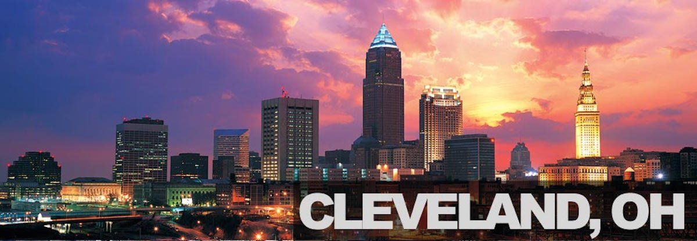

Facts about Cleveland
- Playhouse Square Center is the 2nd largest performing arts venue in the United States.
- The Cuyahoga River is also known as "The River that Caught Fire" because it has caught on fire 13 times.
- Lake Erie moderates the weather and temperature, keeping the city cooler in the summer and warmer in the winter, with the occasional lake effect with snow.
- In 1879, Cleveland became the first city to have electricity.
- Cleveland was also the first city in the United States to have an electrical traffic signal.
- The coldest temperature Cleveland ever reached was -20 degrees
- Cleveland's name comes from Moses Cleaveland, the "a" was removed because there wasn't enough room in the masthead
- Home of the Cleveland Clinic which has been the nations top heart program for nearly 20 years in a row.
- Superman was created in Cleveland in the 1930's
- Cleveland is known for it's art, hosting one of 14 international fashion showcases and the Cleveland Orchestra being recognized among the best orchestras in the world.
